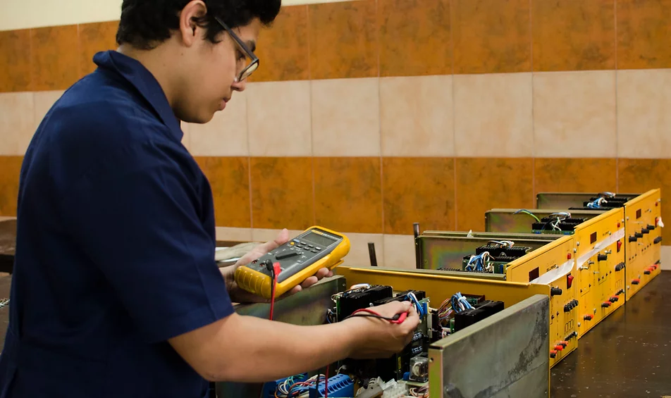

| Mecánica automotríz | Electricidad industrial | Electronica industrial | Informática |
|---|---|---|---|

|

|
 |

|
|
Autoestudio Universidad Honda Japón, mecanismos servo asistidos, mecánica de motores diésel y gasolina, sistemas de ignición e inyección. Diagnóstico computarizado. |
Cableado estructurado, instalaciones eléctricas domiciliares, comerciales e industriales, soldadura exotérmica, transferencias eléctricas, motores eléctricos, automatización industrial, domótica, energías renovables. |
Electrónica analógica, digital y de potencia, micro controladores, máquinas eléctricas, controladores lógicos programables, redes industriales, electroneumática, robótica. |
Desarrollo de aplicaciones web y móviles con Java, Microsoft, Visual Studio, Oracle y diseño de redes informáticas con Cisco System. |